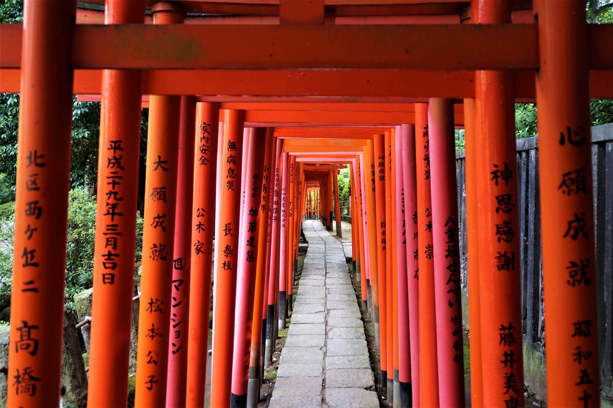

Yanaka area is a true hidden gem which is located in the central Tokyo, yet has an unspoiled atmosphere and local vibes. Shop and eat like local at Yanaka Ginza Shopping Street and explore the charming neighbourhood! Yanaka's Old Town Walking Tour by Magical Trip is one of the most popular guided tours in Tokyo! If you want to see the different side of Tokyo rather than the city's modern culture, this tour is highly recommended! Enjoy walking down the local streets, stop by for street snacks and hit some hidden spots!

Nezu Shrine is a shinto shrine located in Bunkyo ward, which is also walking distance from Ueno area. The shrine is best known for its Azalea festival in spring time, but a great spot to visit all year round. If Fushimi Inari Taisha in Kyoto is your thing, Nezu Shrine also have the gorgeous tunnel made with numerous vermilion torii gates, and it's 100% photo worthy.
If you like trendy spots like Shibuya and Harajuku but expect to see less crowds, Hiroo is a great choice. Although Hiroo is located within a short distance from the busy areas such as Shibuya and Ebisu, it has more relaxing and calm atmosphere. It's home to several embassies and popular residential area for expats. It's a great area to explore the latest Tokyo food culture as numbers of swanky spots gather in this area, such as cafes and restaurants serving trendy and healthy items.